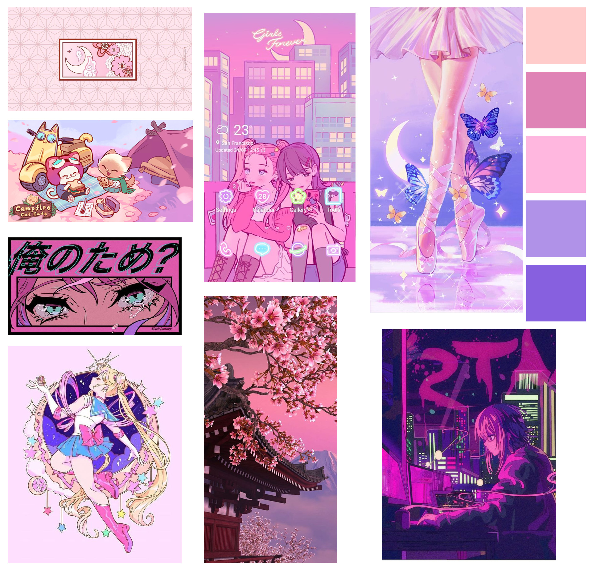

PROTO-PERSONAS
Amelia (38 años)
Amelia es una streamer chilena, vive sola en su departamento y se sustenta de su trabajo como streamer. El contenido principal que hace son los videojuegos, pero cada vez que se pone a jugar en multijugador con su público llega gente a tirarle piropos o a dicirle cosas indebidas. Esto le sienta mal a Amelia ya que una de sus reglas en sus streams esque sea un espacio seguro.
Amelia tiene un set up armado en su habitación exclusivo para hacer directos, todo lo compro gracias a sus ingresos como streamer. Ella no quiere que directos se vuelvan incómodos y por más que ella bloquee a esas personas siempre vuelven, por lo que decide buscar videojuegos que eviten este tipo de situaciones.
Sofía (20 años)
Estudiante universitaria vive con su mamá y hermana pequeña. Le gustan mucho los videojuegos y casi siempre juega en multijugador. Sin embargo, cada vez que abre el chat de voz para hablar con su grupo en algún videojuego, la insultan diciendole cosas como: "las mujeres no deberían jugar", solo por ser mujer.
Sofía juega en su notebook, por lo general se hace un tiempo los fines de semana para disfrutar de estos y en la semana se dedica a los estudios de la universidad. Sofía busca evitar este tipo de situaciones que vive a diario, para ello decide buscar juegos en que la toxicidad hacia la mujer sea baja.
Alicia (14 años)
Alicia está cursando la enseñanza media, por ciertas circunstancias vive con sus abuelos y perrito. Lleva poco tiempo en el mundo de los videojuegos y suele jugar en solitario debido a que no tiene con quién jugar. Descubrió que algunos juegos se juegan en multijugador, a ella le da miedo debido a que no es muy buena jugando y no quiere que la insulten por ello, pero sus ganas por jugar con alguien son muy fuertes.
Alicia juega en el notebook que le regalaron sus abuelos. Ella ha estado buscando información sobre los juegos multijugadores y suele ver videos de gente jugando en compañia, ve que hay mucha gente que se enoja rápido así que decide investigar que juegos tienen seguridad en los multijugadores.
MOODBOARD
COLORES
El rosado más claro será el color principal de la página debido a la feminidad que representa. El color que dará contraste será el morado oscuro para que de una sensación de tranquilidad y resaltará ciertos lugares y en conjunto coneste el morado más claro será para dar una transición con los demás colores. El verde claro será para dar contraste a ciertas partes.
TIPOGRAFÍAS
MANROPE
Manrope es una familia de fuentes sans-serif moderna de código abierto, diseñada por Mikhail Sharanda en 2018. En 2019, Mirko Velimirovic trabajó con Mikhail Sharanda para convertir Manrope en una fuente variable.
QUICKSAND
Quicksand es un display sans serif con terminales redondeados. El proyecto fue iniciado por Andrew Paglinawan en 2008 utilizando formas geométricas como base central. Está diseñado para fines de exhibición, pero también se mantiene lo suficientemente legible como para usarlo en tamaños pequeños. En 2016, en colaboración con Andrew, Thomas Jockin lo revisó a fondo para mejorar la calidad. En 2019, Mirko Velimirovic convirtió la familia en una fuente variable.